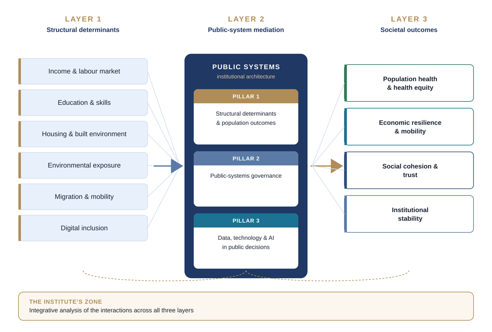

Our work
One agenda, three pillars
The Institute's research addresses the structural drivers of inequality and public-system performance through interdisciplinary policy analysis.
The framework
Our analysis follows a three-layer model. Structural determinants enter, public systems mediate, societal outcomes result. The Institute works on the interactions among all three.

| Layer | What it covers |
|---|---|
| 1. Structural determinants | Income and labour market, education, housing and the built environment, environmental exposure, migration and mobility, digital inclusion. |
| 2. Public-system mediation | Health, social-protection, education, statistical and regulatory systems, and multilateral coordination. |
| 3. Societal outcomes | Population health and health equity, economic resilience and mobility, social cohesion and trust, institutional stability. |
The aim is not to add to the literature on any single layer. It is to develop the frameworks, comparative analyses and policy tools that allow governments and institutions to understand the interactions and act on them.
Research pillars
Priority questions
Structural determinants and population outcomes
- How income distribution and labour-market participation translate into health and educational outcomes through demographic transition.
- How housing quality and environmental exposure mediate inequalities in population health.
- How mobility, whether internal, cross-border or refugee, reshapes the landscape of structural determinants.
- How digital inclusion conditions access to public services across age groups and geographies.
Public systems governance
- How statistical and registry infrastructure conditions evidence-based policymaking.
- How health, social-protection and education systems interact under demographic and fiscal pressure.
- How multilateral coordination supports, or fails to support, countries' own analytical capability.
- How regulatory frameworks for data, AI and the environment shape public-system performance.
Data, technology and public decision-making
- How the European Health Data Space, the EU AI Act, the GDPR and the Data Governance Act interact in practice.
- Privacy-preserving methods for linking public and privately held datasets in the public interest.
- Ethical standards for the use of AI in public-service delivery.
- Ensuring AI-enabled analytical platforms strengthen public-sector analytical capability and do not displace it.
Cross-pillar work is the Institute's defining contribution. A programme on refugee health and structural determinants in European public systems brings together Pillars 1 and 2. A programme on privacy-preserving AI integration in public-health systems brings together Pillars 2 and 3. A programme on structural vulnerability and resilience indicators spans all three.
Outputs
Signature products
Five products anchor the Institute's public identity. Each stands alone and also forms part of a recurring cycle of publication and convening.
Flagship report
Refugee health and structural determinants in European public systems. The first report serves as the empirical proof of concept, anchored in data from Poland.
Structural Vulnerability Tracker
An open-access comparative dataset and dashboard on exposure to structural determinants, planned to cover more than 30 countries.
AI Governance Toolkit for Public Systems
A practical framework for bringing AI into public systems in the public interest, aligned with the European Health Data Space, the EU AI Act, the GDPR and the Data Governance Act.
Geneva Public Systems Dialogue
A quarterly hybrid seminar series for policymakers, academics and staff of multilateral organisations.
Geneva Forum on Public Systems
An annual convening on the structural determinants of public-system performance.
These five are the core, not the limit. As priorities and partner needs evolve, we expect to add further public outputs, such as online toolkits, training curricula and a library of analytical frameworks drawn from completed work. New products are judged by the same test as the first five: public-interest value, methodological rigour and fit with the cross-sectoral mandate.
Current engagement
Where we are active now
The Institute did not begin from a standing start. Its founders have spent their careers inside the institutions that govern global health, official statistics, occupational and environmental health and technology regulation, and that work continues through the Institute. Four lines of engagement are under way.
Global health architecture
The institutions that govern global health are being asked to do more with less, in a world that has changed since they were designed. We contribute analysis and strategic advice on their renewal: how they can serve every member state, protect every person and take account of a changing planet.
Our starting point is that reform should be judged from the front line. A global institution works when a health worker, a district manager or a statistician in a country can feel the difference.
AI for health: global strategy and governance
Artificial intelligence can bring knowledge, diagnosis and decision support to places that have never had enough health workers or enough data. Whether it does so fairly depends on the rules and the institutions around it.
The Institute supports global work on AI for health, including strategic frameworks and governance arrangements that bring governments, United Nations agencies, development banks and technology developers together, with the aim of putting intelligence to work for universal health coverage.
Country-focused work
Global frameworks matter only when they change what happens in countries. We prepare rapid gap analyses, strategic frameworks and national plans with governments and regional bodies in Africa, Asia and Europe.
This includes readiness for AI in health systems, the strengthening of health data and statistical systems, the health workforce, and plans for universal primary health care.
Climate, health and financing
Climate change is already a health-system problem: heat, floods and shifting disease patterns fall first on primary care. We work on how climate finance can be used to build primary health care that withstands these shocks, and on the case for treating health-system resilience as a climate investment.
These lines of work feed the research pillars above. What we learn in advising on global frameworks and in working with countries becomes the evidence base for the Institute's reports, tools and convenings.
Partnerships
Our approach to partners
The Institute is designed to engage the existing Geneva and international policy ecosystem, not to replicate it. We are open to partnership with any academic, statistical, multilateral or civil-society body whose work meets two tests: methodological rigour, and a shared commitment to public-interest analysis.
Partnerships are bilateral. The Institute contributes cross-sectoral analytical work. Partners contribute disciplinary depth, data access and convening reach. The aim is durable cooperation.